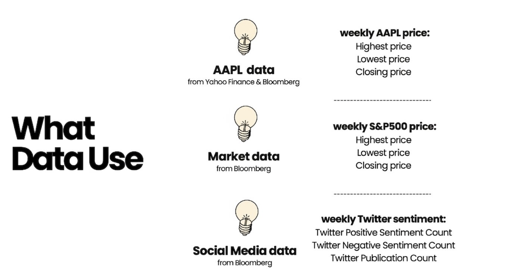
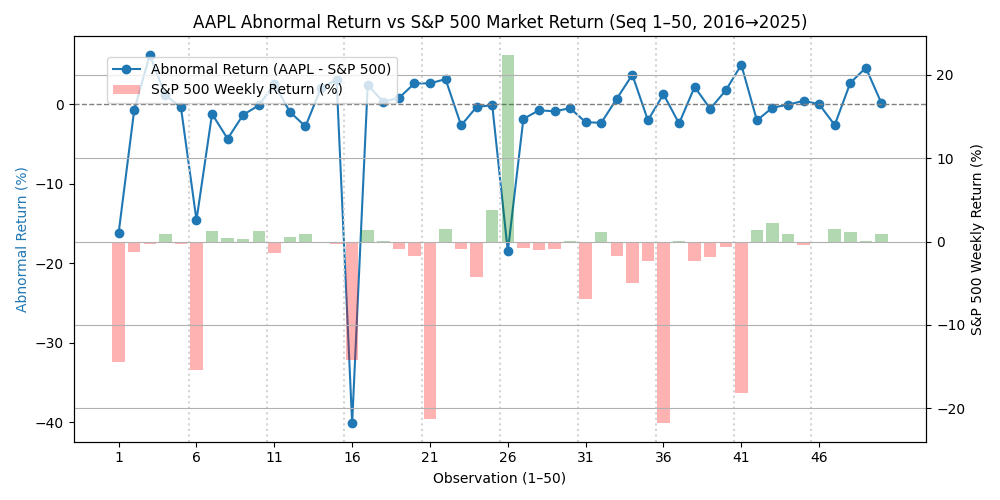

01. Research Design
Objectives & Hypothesis
While social media provides a "mirror" to investor views, its actual predictive power for mega-cap stocks remains controversial. Our study bridges this gap using weekly event windows.
RQ1: Do significant AR exist near major events?
RQ2: Statistical link between Sentiment & Price?
RQ3: Predictive power for future weekly returns?
02. Framework
Timeframe
2016 - 2025
Event Window
Wk -1 to Wk +3

03. Methodology
Pearson
Correlation
2 × 2
Contingency
Chi-Sq
Independence
Lag-1
Regression
04. Abnormal Return (AR)

This chart compares Apple’s abnormal returns with the S&P 500 weekly returns across 50 launch-related observations from 2016–2025. The results show that AAPL often achieves small positive abnormal returns around iPhone launch periods, although occasional negative shocks appear due to broader market conditions.
Case Study
Obs.16 Macro Pressure
16
Case Study
Obs.26 Market Lag
26
Final Conclusion
Social-media sentiment reflects current market mood,
but does not forecast future returns.